EZ
01 / CURRENT MAJOR PROJECT
EYEZEN
Adaptive illumination concept for reducing eye fatigue in study and work environments.
Raspberry PiSensorsIoT


Pre-final year Biomedical Engineering student exploring Healthcare AI, Machine Learning, Computer Vision, embedded systems and practical MedTech innovation.

I am a pre-final year Biomedical Engineering student interested in healthcare technology, machine learning, computer vision and medical-device innovation. I like taking a real problem, building a working prototype and learning from every iteration.
My work spans eye-care innovation, biomedical signal monitoring, wearable concepts, embedded systems and healthcare-focused AI.
Tap a project to see the idea, build, tools and my role — not just a pretty picture.
Adaptive illumination concept for reducing eye fatigue in study and work environments.
Portable ECG monitoring with local waveform display and network access.
Spectacle-like wearable concept exploring optical sensing and motion-aware monitoring.
A practical biomedical-device project focused on TMJ pain relief and user comfort.
Rule-based healthcare assistant using Arduino, TFT display and SD storage.
Instead of showing certificates as the main story, this section focuses on the experience and the environments I was exposed to.
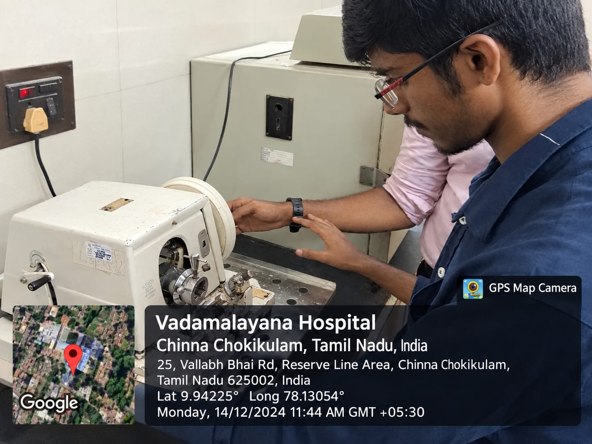
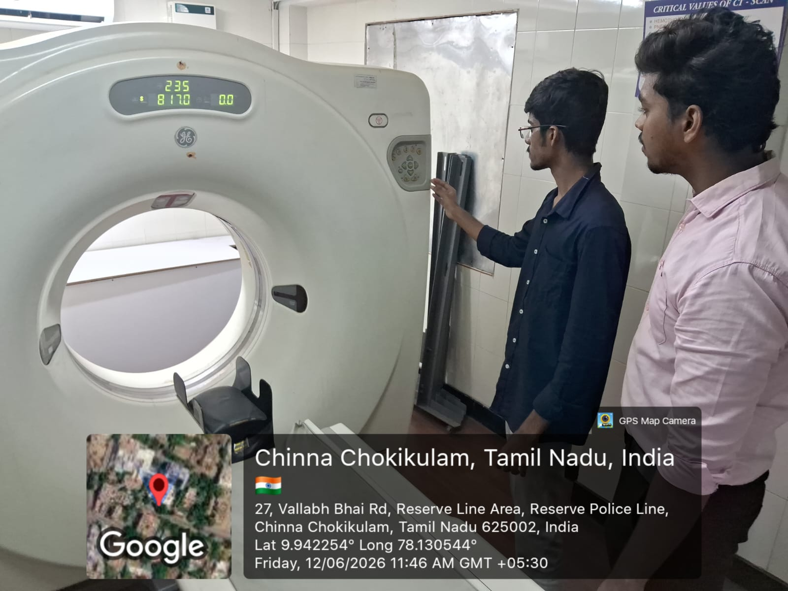
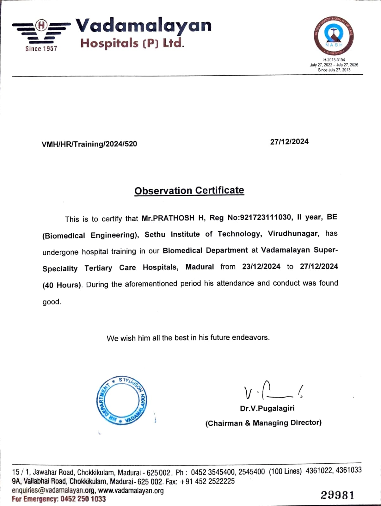
Exposure to clinical workflows, biomedical equipment and the role of technology in hospital care.
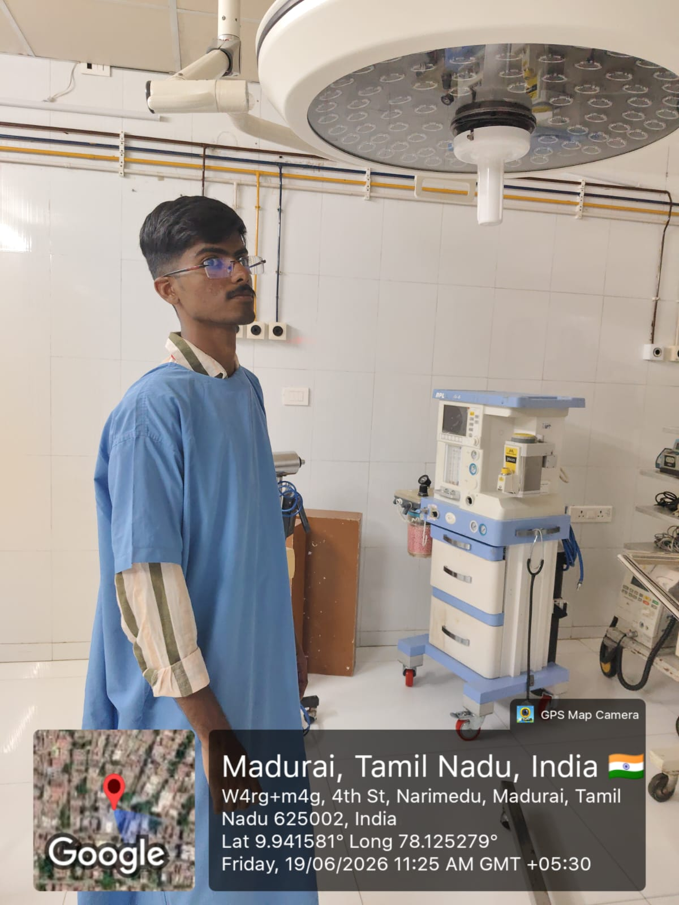
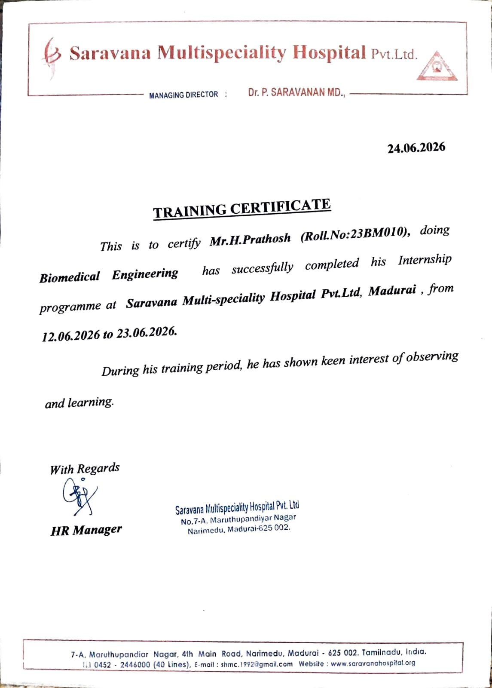
Clinical-environment exposure with an emphasis on biomedical technology, equipment and healthcare operations.
This is the more personal side of my engineering journey — presentations, innovation programs, teams and the moments behind the projects.
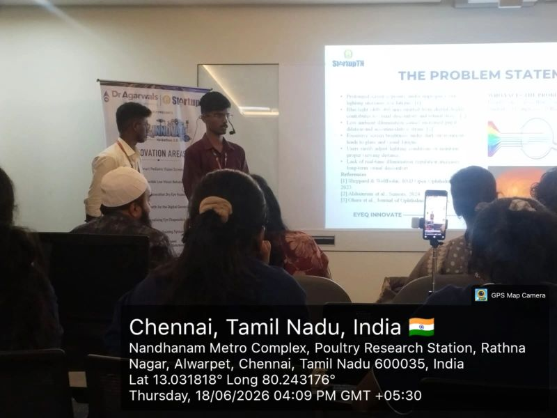
An eye-care innovation journey around adaptive illumination, blue-light exposure and practical implementation.
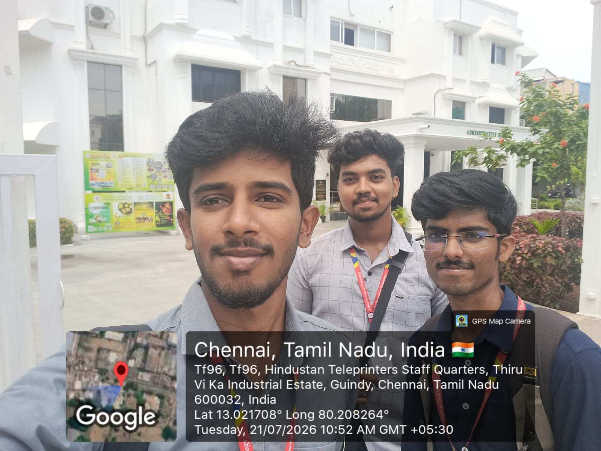
Shortlisted for IVP and presented the innovation journey through the EDII-TN ecosystem.
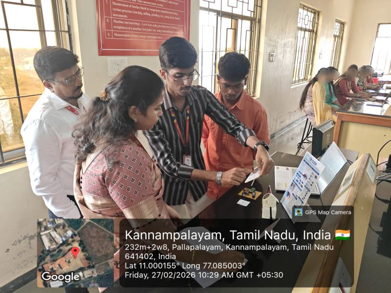
Project presentation experience where technical work had to become a clear story for judges and audiences.
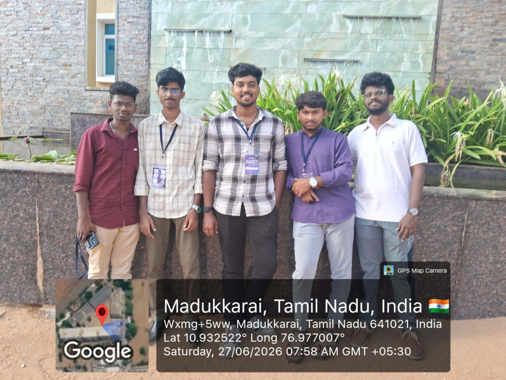
Innovation is not only the prototype — it is also the team discussions, feedback and iterations behind it.
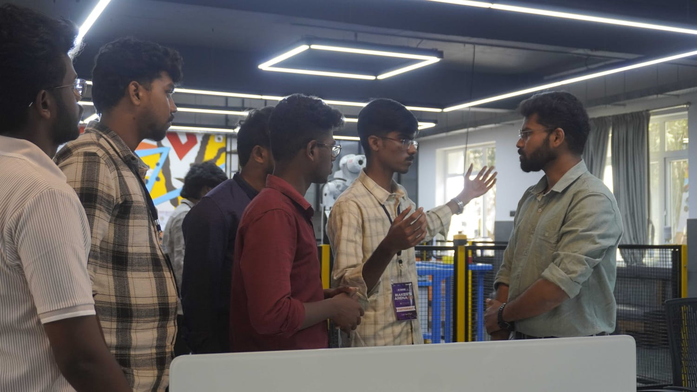
Exposure to entrepreneurship and innovation environments beyond regular academic work.
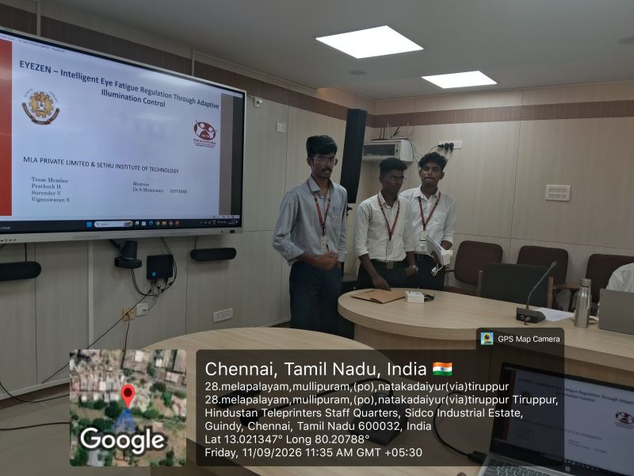
Learning how to communicate a biomedical idea clearly, visually and with real-world relevance.

Recognition for project innovation and presentation.

Recognition for achievement and project work.

Academic presentation achievement.

A creative achievement beyond engineering.
Python · C · C++ · MATLAB · Scilab
Machine Learning · OpenCV · Healthcare AI · Biomedical Signal Processing
Arduino · ESP32 · Raspberry Pi · Sensors · IoT